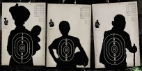

Quand l’instabilité du monde et du regain des tensions fait le bonheur de la France
Observer les principaux destinataires des exportations d'armes françaises au cours de la 5ème République (en place depuis 1958) donne une bonne illustration d'une partie des conflits et transitions politiques intervenues pendant la deuxième moitié du XXème siècle.
Sous le Général De Gaulle, la France vend massivement à l'Allemagne de l'Ouest qui cherche à se reconstruire sous l'impulsion d'Adenauer. Pompidou a profité de l'arrivée au pouvoir de Kadhafi en 1969 en Libye. Sous Giscard d'Estaing, Franco meurt, la dictature des colonels grecs tombe et le Maroc est en guerre dans le Sahara. Mitterand vend des armes à l'Irak et à l'Arabie Saoudite dans le contexte de la guerre Iran-Irak et de la guerre du Golfe. Avec Chirac et la fin du XXème, les tensions s'apaisent et les exportations diminuent.
La vente d’armes aux pays qui prennent leur population pour cible

Guerre Irak - Iran:
• 1980 - 1988
• 1.350.000 morts
La France fut le deuxième fournisseur d'armes de l'Irak, formant des pilotes, permettant aux irakiens d'utiliser la Base d'aéronautique navale de Landivisiau (pour la formation de pilotes) et la Base aérienne de Châteauroux-Déols (pour l'exportation d'armes vers l'Irak) et prêtant même cinq Dassault Super-Étendard (lors de l'opération Sugar) de sa marine en attendant que les Mirage F1 commandés soient livrés.La France avait également conclu un contrat pour la vente de trente-six Mirage à l'Irak en 1977, à l'occasion d'une visite du premier ministre Raymond Barre à Bagdad. Ce contrat sera honoré dès 1981 avec la livraison de quatre mirages F1.Selon l'historien Pierre Razoux :
"Pendant toute la durée de la guerre, la France va s’imposer comme le second pourvoyeur d’armes de l’Irak, derrière l’Union soviétique, en lui livrant 121 Mirage F-1, 56 hélicoptères de combat, 300 véhicules blindés, 80 canons automoteurs GCT-AUF1, du matériel antiaérien et antichar de dernière génération, des milliers de missiles et des millions d’obus et munitions diverses."
Mais aussi, la France a fourni secrètement à l'Iran (le camp adverse) environ 450 000 obus d'artillerie de 155 et 203 mm de la société Luchaire entre 1982 et 1986 ainsi que des pièces détachées pour des missiles sol-air Hawk, que ce soit avec l'accord du gouvernement français dans le cadre du règlement des affaires des otages français au Liban et du contentieux financier franco-iranien Eurodif ou non avec l'aide de sociétés écran en Espagne ou au Portugal.
Révolution égyptienne:
• 25 janvier 2011 - 11 février 2011
• 840 morts et plusieurs milliers blessés
De 2005 à 2010 : La France vend des armes à l’Egypte pour plus de 13,8 millions d’euros.
25 Janvier 2011 : la repression de la revolution fait plus de 840 morts et plusieurs milliers de blessés